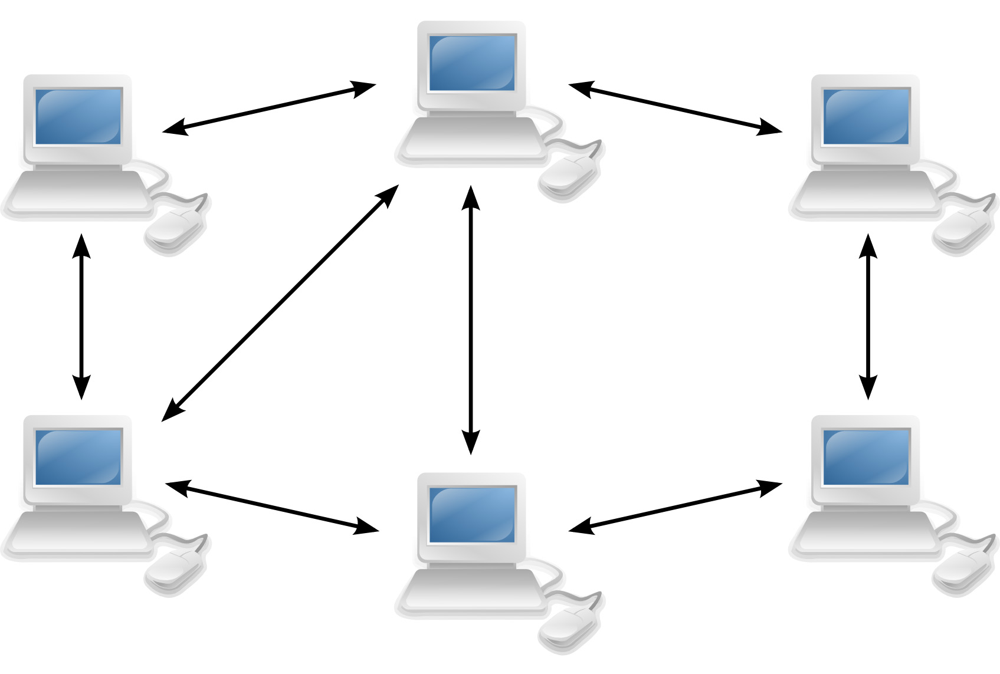

Bitcoin: Future or Scam
ความเป็นมาของบิทคอยน์
เริ่มต้นเมื่อ ปี ค.ศ 2007–2008 เกิดวิกฤติซับไพรม์ หรือที่ไทยเรียกกันว่า วิกฤตแฮมเบอร์เกอร์ ซึ่งสาเหตุหลักเลยมาจากความซบเซาของตลาดอสังหาริมทรัพย์ ในสหรัฐอเมริกา และ ระดับหนี้สินของบริษัทและบุคคลที่สูงเกินไป
เป็นผลมาจากการที่ธนาคาร ปล่อยให้บุคคลทั่วไป กู้ยืมได้ง่าย โดยทางธนาคารนั้นได้สร้างข้อเสนอ และแรงจูงใจ อยากให้คนมากู้ โดยบอกว่าในอนาคต ราคาบ้านหรืออสังหาริมทรัพย์ จะมีแนวโน้มสูงขึ้น ทีนี้คนต่างก็แห่กันมากู้ เพื่อนำไปสร้าง อสังหาริมทรัพย์ ไว้เก็งกำไรกัน
ความจริงไม่ได้สวยหรูอย่างที่คิด เมื่อราคาบ้านถูกลง แต่ดอกเบี้ยกลับแพงขึ้น ทีนี้คนก็เริ่มเบี้ยวไม่จ่ายหนี้ละ เพราะจ่ายกันไม่ไหว ผลที่ตามมาคือ ถูกธนาคารยึด ครับ คนกู้ก็ขาดทุน ธนาคารยึดบ้านไป ก็ขาดทุน เหตุการณ์นั้นธนาคารและสถาบันการเงิน สูญเสียไปกว่า 4.35 แสนล้านดอลลาร์ จากเหตุการณ์นี้ เป็นเหตุทำให้ผู้คนเริ่มไม่ไว้ใจ และ ไม่เชื่อถือ ในธนาคาร See more..
และในช่วง ปี 2007 เริ่มมีการพูดถึงคอนเซ็ปของ บิทคอยน์ และ แนวคิดที่จะออกจากระบบการเงินเดิมๆ ที่มีรัฐบาลเป็นผู้ควบคุม และหลีกหนีจากปัญหาที่เงินในรูปแบบปัจจุบันนั้นขาดความเป็นส่วนตัว โดยคนเปิดประเด็นคือบุคคลนิรนามที่ใช้ชื่อว่า Satoshi Nakamoto
ซึ่งเรื่องนี้ได้ถูกพูดคุยกัน ภายในกลุ่มที่ชื่อว่า Cypherpunk โดยปกติกลุ่มนี้จะพูดคุยกันเกี่ยวกับ คณิตศาสตร์ หรือพวก ศาสตร์แห่งการเข้ารหัส เป็นต้น และจะสนทนากันผ่านทางอีเมลเท่านั้น
VIDEO สิงหาคม ปี 2008 Bitcoin.org ได้ถูกก่อตั้งขึ้น 31 ตุลาคม 2008 เว็บดังกล่าวได้เผยแพร่เอกสาร (White paper) ออกสู่สาธารณะเป็นครั้งแรก โดยใช้ชื่อว่า Bitcoin: A Peer-to-Peer Electronic Cash System ซึ่งเขียนโดยนาย Satoshi Nakamoto See more..
วันที่ 3 มกราคม ปี 2009 เน็ตเวิร์คของบิทคอยน์ถูกตั้งขึ้นครั้งแรก โดยเริ่มนับที่ Block ที่ 0 และกำหนดรางวัลไว้ที่ 50 BTC ซึ่ง Block นี้เป็นกรณีพิเศษที่ (hardcode) ขึ้นมาเอง ซึ่งจะไม่มี previous block หรือ block ก่อนหน้า
วันที่ 9 มกราคม ปี 2009 บิทคอยน์ ได้เปิด Open Source ให้คนทั่วไปได้เขาถึง และผู้ทดสอบและผู้สนับสนุนคนแรก คือนาย Hal Finney ซึ่งเป็นโปรแกรมเมอร์ โดยเขาได้ทำการ ดาวน์โหลด Software (คล้าย walletในปัจจุบัน) มาทดสอบ ตั้งแต่วันที่ Software ถูกเผยแพร่ See more..
จากนั้นไม่กี่วัน ใน วันที่ 12 มกราคม 2009 ปีเดียวกันนี้เอง Satoshi Nakamoto ได้ทำการโอนบิทคอยน์ จำนวน 10 BTC ให้กับนาย Hal Finney ซึ่งนับเป็น Transaction แรกของบิทคอยน์ที่เกิดขึ้นในโลก
วันที่ 17 พฤษภาคม ปี 2010 นาย laszlo ได้ไปตั้งกระทู้ใน BitcoinTalk ว่า
“ผมจะจ่ายให้ 10,000 BTC สำหรับพิซซ่าสัก 2 ถาด ผมจะได้เหลือมันไว้กินในวันต่อไป ผมชอบกินพิซซ่าที่เหลือค้างมาจากวันอื่น คุณจะทำมันเอง หรือ จะสั่งแล้วก็ส่งมันมาก็ได้ อย่างไรก็ตาม สิ่งที่ผมต้องการจะคือใช้ บิทคอยน์แลกกับอาหารโดยที่ผมไม่จำเป็นต้องทำเอง คล้าย ๆ กันกับสั่งอาหาร เดลิเวอรี่ ที่โรงแรม ที่เขานำอาหารมาเสริฟ์ในห้อง และคุณก็แค่กินมันอย่างมีความสุข”
หลังจากนั้นไม่กี่วันใน วันที่ 22 พฤษภาคม เขาได้กลับมาโพสใน BitcoinTalk อีกครั้งพร้อมกับคำว่า
“ผมแค่อยากจะมารายงานว่า ผมได้แลกบิทคอยน์ จำนวน 10,000 BTC กับพิซซ่าแล้ว, ขอบคุณ Jercos!”
ซึ่งนี่นับเป็น Transaction แรกที่มีการนำ บิทคอยน์มาแลกกับสิ่งของที่มีมูลค่า โดยถ้าเทียบมูลค่า ณ ปัจจุบัน 10,000 BTC จะอยู่ที่ประมาณ 33 ล้านดอลลาร์สหรัฐ(ในปัจจุบัน) ซึ่งนับเป็นการซื้อขายพิซซ่า ที่แพงที่สุดในโลก
ปี 2010 Jed McCaleb (ภายหลังได้ไปลงทุนกับ Ripple) ได้เปิดตัวเว็บไซต์ที่ชื่อว่า Mt.Gox ซึ่งกลายเป็นศูนย์แลกเปลี่ยนบิทคอยน์รายใหญ่ที่สุดในโลก มีสัดส่วนในตลาดมากกว่า 10%
เดือน มิถุนายน ปี 2011 Mt.Gox โดนแฮก คาดว่าน่าจะเป็นผลมาจากเครื่องที่ทำบัญชีของบริษัทถูกแฮก โดยการแฮกครั้งนี้แฮกเกอร์ได้ บิทคอยน์ ไปประมาณ 2,650 BTC โดย 2,000 BTC เป็นของลูกค้า อีก 650 เป็นของ Mt.Gox ที่ซื้อมาเก็บไว้
เดือน กุมภาพันธ์ ปี 2011 นับเป็นปีที่ 3 ตั้งแต่บิทคอยน์เปิดตัวมา เป็นครั้งแรกที่บิทคอยน์ มีมูลค่าเท่ากับ เงินดอลลาร์ หรือ 1 BTC เท่ากับ 1 USD
ปี 2011–2012 บิทคอยน์เติบโตขึ้นอย่างรวดเร็ว เว็บไซต์ต่างๆเริ่มรับบิทคอยน์เป็นอีกช่องทางในการชำระหรือรับบริจาค เช่น Wikileaks และเริ่มมีเหรียญสกุลอื่นๆเพิ่มมากขึ้นเรื่อยๆ พร้อมทั้งมิจฉาชีพ หรือการค้าสิ่งผิดกฏหมาย ที่เพิ่มมากขึ้นตามไปด้วย เช่น silkroad.com คือ เป็นเว็บไซต์ซื้อขาย ยาเสพติด สินค้าผิดกฎหมายผ่าน ซอฟต์แวร์ Tor ซื้อไม่สามารถย้อนรอยหา IP ของผู้ซื้อและผู้จำหน่าย และ ยังรับการชำระเงินผ่าน บิตคอยน์ ซึ่งทำให้ไม่สามารถหาร่องรอยของการทำธุรกรรมได้เลย See more..
เดือน มิถุนายน ปี 2012 เว็บไซต์ coinbase เป็นที่นิยมมากที่สุดสำหรับใช้เก็บบิทคอยน์แบบ ออฟไลน์ (Cold Wallet)
กราฟแสดงปริมาณการเพิ่มขึ้นของจำนวนผู้ใช้ เดือน พฤษภาคม ปี 2013 สามารถกดเงินที่ได้จากบิทคอยน์ผ่านทาง ATM ได้เป็นครั้งแรก ที่เมืองซานดิเอโก
เดือน สิงหาคม ปี 2013 รัฐได้ประกาศว่า สำหรับบริษัทที่จะทำธุระกิจที่เกี่ยวข้องกับ บิทคอยน์ ให้มาลงทะเบียนให้ถูกต้อง หรือเป็นการขอ BitLicense ในการดำเนินธุระกิจ เพื่อเป็นการคุ้มครองผู้บริโภค (ให้ผู้บริโภคได้มีความมั่นจะว่าจะไม่ถูกหลอกลวง) การประกาศนี้ได้รับการตอบรับเป็นอย่างดี โดยในรัฐนิวยอร์ก มีบริษัททั้งหมด 22 บริษัทที่มาลงทะเบียน
เดือน พฤศจิกายน 2013 ราคาบิทคอยน์พุ่งทะยานขึ้นแตะ 1,000 ดอลลาร์สหรัฐ เป็นครั้งแรก
เดือน กุมถาพันธ์ ปี 2014 Mt.Gox โดนแฮกอีกครั้ง โดยใน เอกสารระบุว่าการแฮกครั้งนี้เกิดจาก ปัญหา “transaction malleability” ที่ผู้รับข้อความโอนเงินสามารถเปลี่ยนข้อความส่วน TXID (transaction ID) ได้ทำให้บริษัทรับแลกเงินคิดว่ารายการโอนเงินที่โอนออกไปนั้นไม่สำเร็จและพยายามโอนซ้ำอีกครั้ง ขณะที่เงินที่แท้จริงนั้นถูกโอนออกไปแล้ว จนถึงตอนนี้ Mt.Gox มี Bitcoin เหลือในบัญชีเพียง 2,000 BTC พร้อมกับเงินสดเพียง 22 ล้านดอลลาร์ ขณะที่บัญชีของลูกค้าที่ค้างจ่ายตอนนี้มี Bitcoin มากถึง 624,408 BTC และเงินสดสกุลต่างๆ อีกประมาณ 55 ล้านดอลลาร์ โดยนาย Mark Karpeles ผู้บริหาร Mt.Gox ได้ยื่นเอกสารต่อศาลในโตเกียว ประเทศญี่ปุ่นเพื่อขอล้มละลาย และพิทักษ์ทรัพย์เรียบร้อยแล้ว See more..
เดือน กันยายน ปี 2014 Paypal (ธนาคาร ออนไลน์) ได้ประกาศยอมรับการชำระเงินผ่าน บิทคอยน์แล้ว
เดือน สิงหาคม ปี 2015 คาดกันว่า มีร้านค้ามากกว่า 160,000 ร้าน ยอมรับการชำระสินค้าผ่าน บิทคอยน์
เดือนมีนาคม ปี 2016 คณะรัฐมนตรีของญี่ปุ่น ออกมายอมรับว่า บิทคอยน์นั้นสามารถชำระสินค้าได้เหมือนกันกับเงินจริง
เดือน สิงหาคมปี 2016 เว็บไซต์ Bitfinex ซึ่งเป็นเว็บแลกเปลี่ยนบิทคอยน์ รายใหญ่ ถูกแฮก สูญเสียไปเกือบ 120,000 BTC (ประมาณ 509 ล้านเหรียญ) ปี 2017 บิทคอยน์ยังได้รับความนิยมอย่างต่อเนื่อง มีคนกด Star ใน Github มากว่า 10,000 ครั้ง See more..
เดือน พฤษภาคม ปี 2017 มีมัลแวร์เรียกค่าไถ่ ที่ชื่อว่า WannaCry ระบาดหนักส่งผลกระทบต่อคอมพิวเตอร์ระบบ Windows ทั่วโลก โดยแฮกเกอร์ได้ยื่นขอเสนอว่าให้จ่ายเงินมูลค่า $300 (ประมาณ 1 หมื่นบาท) ในสกุล บิทคอยน์ ไปยังเลขที่บัญชีที่ระบุไว้ ถึงจะส่งโปรแกรมสำหรับถอดรหัสกลับมาให้ See more..
เดือน สิงหาคม ปี 2017 เกิดการ Hard fork ขึ้นที่ Block 478558 เกิดเป็นเหรียญสกุลใหม่ ภายใต้ชื่อ Bitcoin Cash (BCH) ซึ่งเคลมว่า Bitcoin Cash นี่แหละที่จะมาเป็นเงินสกุลหลักแทนที่บิทคอยน์
วันที่ 22 มกราคม ปี 2018 รัฐบาลประเทศเกาหลีใต้ ได้ออกมาประกาศว่า สำหรับคนที่ต้องการซื้อขาย บิทคอยน์บน exchange จำเป็นต้องเปิดเผย หรือยืนยันตัวตน (kyc)
วันจันทร์ ที่ 14 พฤษภาคม ปี 2018 ประเทศไทย ประกาศ เก็บภาษีเงินดิจิตอลคริปโตโทเคน 15% ของกำไร
เทคโนโลยีที่ทำให้บิตคอยน์เกิดขึ้นได้จริง(Blockchain)
"Blockchain ไม่ใช่ Bitcoin" .
อย่างแรกที่คนจำนวนมากยังเข้าใจผิดอยู่จะต้องทำความเข้าใจกันใหม่เลยคือคำว่า Blockchain กับ Bitcoin แตกต่างกัน แต่ก็มีความสัมพันธ์กันในเชิงที่ Bitcoin นั้นได้อาศัยเทคโนโลยี Blockchain ในการพัฒนาแนวคิดสกุลเงินดิจิทัลที่มีหัวใจหลัก คือ การกระจายศูนย์กลาง(Decentralize) ให้สามารถเกิดขึ้นได้จริงนั้นเอง ดังนั้นบิทคอนย์ก็เปรียบเสมือนสินทรัพย์ประเภทหนึ่งนั้นเอง แต่ทว่า Blockchain คืออะไรละ?
“Blockchain เป็นรูปแบบการเก็บข้อมูล(Data Structure)แบบหนึ่ง ที่ทำให้ข้อมูล Digital transaction ของแต่ละคนสามารถแชร์ไปยังทุกคนได้ เป็นเสมือนห่วงโซ่(Chain) ที่ทำให้ Block ของข้อมูลลิ้งต่อไปยังทุกๆคน โดยเพื่อทำให้ทราบว่าใครเป็นเจ้าของและมีสิทธิในข้อมูลนั้นจริงๆ”
เทคโนโลยี Blockchain ถูกออกแบบมาเป็นเทคโนโลยีแบบกระจายอำนาจที่ไม่ขึ้นกับส่วนกลาง (decentralized technology) อะไรที่เกิดขึ้นบน Blockchain คือการทำงานของเครือข่ายโดยรวม ประเด็นคือ Blockchain เป็นการตรวจสอบการทำธุรกรรมทางการค้าในรูปแบบใหม่ซึ่งการตรวจสอบแบบดั้งเดิมอาจกลายเป็นสิ่งที่ไม่จำเป็น การซื้อขายในตลาดหลักทรัพย์ทำพร้อมกันได้เกือบทั้งหมดบน Blockchain หรืออาจทำให้การเก็บบันทึกข้อมูลบางประเภท เช่น การจดทะเบียนที่ดินกลายเป็นสาธารณะอย่างเต็มที่และทำให้เกิดการกระจายอำนาจอย่างแท้จริง
เครือข่ายคอมพิวเตอร์ของโลกใช้ประโยชน์จากเทคโนโลยี Blockchain ในการจัดการกับฐานข้อมูลที่เกี่ยวกับการทำธุรกรรมของ Bitcoin ซึ่งก็หมายความว่า Bitcoin ถูกจัดการโดยเครือข่ายของมันเองโดยไม่มีอำนาจจากส่วนกลางเข้ามายุ่งเกี่ยว โดย decentralization นั้นก็คือเครือข่ายที่มีการดำเนินการแบบบุคคลต่อบุคคล (peer-to-peer) ที่ไม่ต้องขึ้นกับส่วนกลางนั่นเอง

ลองนึกภาพของเอกสารฉบับหนึ่งที่ถูกคัดลอกเป็นพัน ๆ ครั้งบนเครือข่ายอินเตอร์เน็ต จากนั้นลองจินตนาการว่าเครือข่ายดังกล่าวถูกออกแบบมาให้อัพเดทข้อมูลในเอกสารดังกล่าวอยู่ตลอด เช่นเดียวกับการทำงานของ Blockchain โดยพื้นฐานก็เป็นเช่นนี้
ข้อมูลที่อยู่บน Blockchain จะสามารถเข้าถึงได้ทุกคน ฐานข้อมูลของ Blockchain จะไม่ได้ถูกเก็บไว้ในที่ใดที่หนึ่งเพียงแห่งเดียว หมายความว่าข้อมูลที่ถูกบันทึกบน Blockchain จะถูกเปิดเผยเป็นสาธารณะและสามารถถูกเข้ามาตรวจสอบได้ ข้อมูลเหล่านี้จะไม่มีส่วนกลางเข้ามาทำหน้าที่ควบคุมและปกป้อง ดังนั้นนักแฮ็คจะไม่สามารถเข้ามาแฮ็คข้อมูลนี้ได้ เนื่องจากว่าไม่มีจุดศูนย์กลางให้โจมตี นั่นหมายความว่าหากพวกเขาต้องการจะแฮ็คเพื่อเปลี่ยนแปลงข้อมูลนั้น พวกเขาจะต้องโจมตีฐานข้อมูลที่ถูกกระจายออกไปทั้งหมดในเวลาพร้อมกัน อีกทั้งคอมพิวเตอร์หลายพันเครื่องหลายล้านเครื่องจะเข้ามาดูแลข้อมูลดังกล่าวทำให้ทุกคนสามารถเข้าถึงข้อมูลนี้ได้
เทคโนโลยี Blockchain หากอธิบายให้เห็นภาพง่าย ๆ ลองนึกภาพว่ามันเป็นเสมือนโซ่ที่สร้างขึ้นเพื่อกระจายข้อมูลเก็บไว้ในชิ้นส่วนโซ่ที่ต่อกัน แต่ข้อมูลเหล่านั้นจะไม่สามารถถูกเปลี่ยนแปลงได้ เรียกได้ว่า Blockchain เป็นอินเตอร์เน็ตในรูปแบบใหม่โดยเริ่มแรกถูกสร้างขึ้นมาเพื่อสร้างสกุลเงินดิจิทัล (Digital Currency) เช่น Bitcoin อย่างไรก็ตามในตอนนี้เทคโนโลยี Blockchain ไม่ได้ถูกสร้างขึ้นเพื่อรองรับสกุลเงินดิจิทัลเพียงอย่างเดียวเท่านั้น ณ ปัจจุบันวงการอุตสาหกรรมอื่น ๆ ได้นำศักยภาพของเทคโนโลยี Blockchain ไปใช้ประโยชน์เพื่ออำนวยความสะดวกให้กับธุรกิจของตนอย่างแพร่หลายมากยิ่งขึ้น
Bitcoin ถูกเรียกว่าว่าเป็น “ทองคำดิจิทัล” ที่มีมูลค่าปัจจุบันคือ 1.12 แสนล้านดอลลาร์สหรัฐ และ Blockchain ก็ถูกนำมาสร้างเงินดิจิทัลประเภทอื่นได้ การมีความรู้พื้นฐานเกี่ยวกับเทคโนโลยีนี้จะทำให้เรารู้ว่าเทคโนโลยี Blockchain นั้นเข้ามาปฏิวัติโลกในยุคปัจจุบันอย่างไรบ้าง
ลองนึกภาพของเอกสารฉบับหนึ่งที่ถูกคัดลอกเป็นพัน ๆ ครั้งบนเครือข่ายอินเตอร์เน็ต จากนั้นลองจินตนาการว่าเครือข่ายดังกล่าวถูกออกแบบมาให้อัพเดทข้อมูลในเอกสารดังกล่าวอยู่ตลอด เช่นเดียวกับการทำงานของ Blockchain โดยพื้นฐานก็เป็นเช่นนี้
ข้อมูลที่อยู่บน Blockchain จะสามารถเข้าถึงได้ทุกคน ฐานข้อมูลของ Blockchain จะไม่ได้ถูกเก็บไว้ในที่ใดที่หนึ่งเพียงแห่งเดียว หมายความว่าข้อมูลที่ถูกบันทึกบน Blockchain จะถูกเปิดเผยเป็นสาธารณะและสามารถถูกเข้ามาตรวจสอบได้ ข้อมูลเหล่านี้จะไม่มีส่วนกลางเข้ามาทำหน้าที่ควบคุมและปกป้อง ดังนั้นนักแฮ็คจะไม่สามารถเข้ามาแฮ็คข้อมูลนี้ได้ เนื่องจากว่าไม่มีจุดศูนย์กลางให้โจมตี นั่นหมายความว่าหากพวกเขาต้องการจะแฮ็คเพื่อเปลี่ยนแปลงข้อมูลนั้น พวกเขาจะต้องโจมตีฐานข้อมูลที่ถูกกระจายออกไปทั้งหมดในเวลาพร้อมกัน อีกทั้งคอมพิวเตอร์หลายพันเครื่องหลายล้านเครื่องจะเข้ามาดูแลข้อมูลดังกล่าวทำให้ทุกคนสามารถเข้าถึงข้อมูลนี้ได้หมด
เทคโนโลยี Blockchain มีข้อดีอย่างไร ? เทคโนโลยี Blockchain เหมือนกับอินเตอร์เน็ตตรงที่ว่ามันเป็นระบบที่มีความทนทานสูงมาก (Robustness) ข้อมูลที่ถูกเก็บไว้ในกล่องที่อยู่บน Blockchain จะไม่ถูกควบคุมโดยใครคนใดคนหนึ่ง
เมื่อจุดใดจุดหนึ่งเล็ก ๆ ในระบบเสีย จะไม่ส่งผลทำให้ระบบทั้งระบบล่ม (Has no single point of failure) เมื่อระบบขาดการเชื่อมต่อกับอินเทอร์เน็ต ระบบจะปิดการอัพเดต block และคงค่า(saved) ไว้ให้เหมือนกับการอัปเดตบล๊อคครั้งล่าสุด จนกว่าจะมีการเชื่อมต่อใหม่อีกครั้งถึงจะเริ่มเขียนบล๊อคใหม่ขึ้น
Bitcoin ซึ่งถูกสร้างปี 2008 ในตอนนั้น Blockchain ของ Bitcoin ไม่เคยมีรายงานว่าระบบการทำงานของมันมีความผิดพลาดหรือล้มเหลวเลย แต่ในปัจจุบันที่มีการแฮ็คหรือการจัดการที่ผิดพลาดเกิดขึ้นเพราะ human error หรือความผิดพลาดโดยมนุษย์ เช่นการแฮ็คเว็บผู้ให้บริการซื้อขายเหรียญคริปโตเคอเรนซี่ ไม่ใช่การเจาะระบบ Blockchain แต่อย่างใด
คุณ Ian Khan นักเขียนด้านเทคโนโลยีกล่าวใน Tedx ว่า “ฟังดูเป็นเรื่องที่น่าทึ่งมาก คือ Blockchain เป็นกลไกที่จะทำให้ทุกคนได้แสดงออกถึงความรับผิดชอบของตนเอง ขจัดความผิดพลาดที่อาจเกิดขึ้นในการทำธุรกรรมหรือข้อผิดพลาดที่เกิดจากการกระทำของมนุษย์หรือเครื่องจักร, หรือแม้กระทั่งการแลกเปลี่ยนที่ไม่ได้เกิดจากความยินยอมของคู่กรณีที่เกี่ยวข้อง นอกจากนั้นแล้วความสำคัญเหนือสิ่งอื่นใดของเทคโนโลยี Blockchain คือการช่วยรับรองความถูกต้องของการทำธุรกรรมโดยการบันทึกข้อมูลโดยไม่เพียงแต่ผู้บันทึกข้อมูลตัวหลักเท่านั้น แต่มันเป็นเรื่องของผู้บันทึกข้อมูลทุก ๆ ฝ่ายที่ถูกเชื่อมต่อกัน ผ่านกลไกการตรวจสอบที่มีความปลอดภัย”
ความโปร่งใสของเทคโนโลยี Blockchain เครือข่าย Blockchain ของ Bitcoin ตั้งอยู่บนพื้นฐานของความเห็นพ้องต้องกันของทุกฝ่าย (consensus) จะมีการตรวจสอบข้อมูลในทุก ๆ 10 นาที ระบบจะตรวจสอบธุรกรรมที่เกิดขึ้นในช่วงระยะเวลา 10 นาทีนี้ การทำธุรกรรมในแต่ละครั้งดังกล่าวจะถูกเก็บไว้ในกล่องที่เราเรียกว่า Block คุณสมบัติที่สำคัญคือ
“ความโปร่งใสของข้อมูลที่สามารถเข้าถึงได้สาธารณะ” ข้อมูลจะไม่สามารถถูกเปลี่ยนแปลงได้เพราะมันจำเป็นต้องใช้พลังการประมวลผลอย่างมหาศาลที่ต้องไปลบล้างข้อมูลบนเครือข่ายทั้งหมด
ในทางทฤษฎีก็อาจเป็นไปได้ที่จะมีคนทำแบบนั้นแต่ในทางปฏิบัติแล้วมันเป็นไปได้ยากมาก ๆ ซึ่งความพยายามที่จะเข้าไปแทรกแซง Blockchain เพื่อขโมยเหรียญ Bitcoin นั้นว่ากันว่า จะต้องใช้พลังงานไฟฟ้าเพื่อส่งกำลังประมวลผลคอมพิวเตอร์ที่มากกว่าประเทศหนึ่งประเทศเสียอีก
คุณVitalik Buterin ผู้สร้างเหรียญEthereum กล่าวว่า “เทคโนโลยี Blockchain เข้ามาแก้ไขปัญหาเรื่องการจัดการ เมื่อผมพูดเกี่ยวกับเรื่องนี้ในแถบตะวันตกผู้คนบอกว่าพวกเขาเชื่อถือ Google, Facebook หรือธนาคารมากกว่า แต่ผู้คนที่อาศัยอยู่ในแถบทวีปอื่นไม่ไว้วางใจองค์กรและบริษัทต่าง ๆ มากนักซึ่งผมหมายถึงแอฟริกา อินเดีย ยุโรปตะวันออกหรือรัสเซีย มันไม่เกี่ยวกับว่าจะต้องเป็นที่ที่ร่ำรวยเท่านั้นถึงจะเข้าถึงเทคโนโลยีนี้ได้ อันที่จริงแล้วเทคโนโลยี Blockchain มีโอกาสที่จะเข้าถึงประเทศที่ไม่ได้ร่ำรวยมากที่สุดได้มากกว่าเสียอีก”
เครือข่ายโหนด (node) เครือข่ายคอมพิวเตอร์ที่ถูกเรียกว่า “โหนด” จะสร้างบล็อคขึ้น โหนดคือคอมพิวเตอร์ที่เชื่อมต่อกับเครือข่าย Blockchain โดยใช้ตัว client ทำการตรวจสอบความถูกต้องและส่งต่อการทำธุรกรรม โหนดจะได้รับสำเนาของ Blockchain ที่ดาวน์โหลดโดยอัตโนมัติเมื่อมันเข้าไปอยู่บนเครือข่าย Blockchain
โหนดทุกตัวเป็นผู้ดูแล Blockchain และเข้ามาอยู่ในระบบด้วยความสมัครใจ ไม่ขึ้นกับส่วนกลาง (decentralized) แต่โหนดทุกตัวที่เข้ามาอยู่ใน Blockchain ก็มีจุดประสงค์คือการได้มาซึ่ง Bitcoin ที่ถูกขุดขึ้นมาใหม่
ในบางครั้งโหนดถูกเรียกว่าเป็นการขุด Bitcoin ซึ่งเป็นการเรียกที่ไม่เหมาะสมนัก การที่จะได้ Bitcoin มานั้นโหนดแต่ละอันต้องแก้ปริศนาคอมพิวเตอร์ โดยเริ่มแรก Bitcoin เป็นเหตุผลที่ Blockchain ถูกสร้างขึ้นแต่ตอนนี้ Blockchain กลายเป็นเทคโนโลยีที่มีศักยภาพในแง่การใช้งานมากที่สุด
ในตอนนี้มีเหรียญคริปโตเคอเรนซีที่เหมือนกับ Bitcoin อยู่ในตลาดประมาณ 1,600 เหรียญ ในขณะเดียวกันก็มีการนำเทคโนโลยี Blockchain ไปปรับใช้กับวงการอื่น ๆ มากขึ้น
คุณ Larry Summers อดีตเลขานุการกระทรวงการคลังของสหรัฐอเมริกา กล่าวว่า “Bitcoin มีบุคลิกลักษณะเหมือนเป็นเครื่องแฟ็กซ์ คือเครื่องแฟ็กซ์หนึ่งเครื่องก็เป็นได้แค่ที่กั้นประตูที่ไร้ประโยชน์ แต่ในโลกที่ใคร ๆ ทุกคนมีเครื่องแฟ็กซ์นั้นมันจะถือเป็นสิ่งที่มีค่ามหาศาล”
เทคโนโลยี Blockchain กับความปลอดภัยที่เพิ่มมากขึ้น การกระจายข้อมูลบนเครือข่ายทำให้มันช่วยขจัดความเสี่ยงที่ข้อมูลจะถูกรวบรวมไว้ที่ส่วนกลางทำให้ Hacker ไม่มีฐานข้อมูลกลางที่ไว้ใช้เจาะข้อมูล ในปัจจุบันนี้อินเตอร์เน็ตมีปัญหาด้านความปลอดภัย เราเชื่อว่าการใช้ username และ password จะช่วยป้องกันไม่ให้ข้อมูลหรือทรัพย์สินของเรานั้นรั่วไหล เทคโนโลยี Blockchain จะช่วยทำให้ความปลอดภัยของข้อมูลและทรัพย์สินของเรามีมากขึ้นได้ด้วยวิธีการทางด้านความปลอดภัยของ Blockchain นั้นเป็นเทคโนโลยีที่ต้องเข้ารหัส (encryption technology)
หรือที่เราเรียกว่า key ตัว Public Key จะระบุ address ของผู้ใช้ที่อยู่บน Blockchain และ Bitcoin ที่ถูกโอนไปมาบนเครือข่ายจะถูกบันทึกข้อมูลการทำธุรกรรมไว้บน adress ของผู้ถือ ส่วน Private Key จะเปรียบเสมือน password ที่ทำให้เจ้าของสามารถเข้าถึง Bitcoin หรือเหรียญดิจิทัลอื่น ๆ ได้ ข้อมูลที่ถูกเก็บไว้บน Blockchain จะไม่สามารถเปลี่ยนแปลงได้
การเกิดขึ้นของ เหรียญทางเลือก(Alternative Cyptocurrencies)
กราฟแสดงมูลค่าทางตลาดของ Crytocurrencies 10 อันดับแรก ปฐมบท Ethereum ความนิยมใน Bitcoin ส่งผลให้มีคนจำนวนมากสร้างสกุลเงินดิจิทัลลักษณะเดียวกันขึ้นมา และหนึ่งในนั้นคือ Ethereum ที่เริ่มพัฒนาโดย Vitalik Buterin เจ้าหนุ่มมหัศจรรย์ชาวรัสเซีย ที่ปัจจุบันมีอายุเพียง 23 ปีเท่านั้นเอง (เขาเริ่มสร้าง Ethereum ในปี 2013 ซึ่งตอนนั้นอายุยังไม่ถึง 20 ปีด้วยซ้ำ)
Vitalik เป็นหนึ่งในนักพัฒนา Bitcoin มาก่อน แต่ก็เห็นข้อบกพร่องและข้อจำกัดของ Bitcoin ทำให้เขาหันมาเริ่มสร้าง Ethereum ขึ้นมาใช้แทน ปัจจุบัน Ethereum เป็นซอฟต์แวร์โอเพนซอร์สที่ดูแลโดยหน่วยงานไม่หวังผลกำไร Ethereum Foundation ในสวิตเซอร์แลนด์
ความสามารถของ Ethereum ถือว่าทัดเทียมกับ Bitcoin ต้นฉบับ แต่สิ่งที่เพิ่มเข้ามาคือฟีเจอร์ที่เรียกว่า Smart Contracts ที่อนุญาตให้เราสามารถเขียนโปรแกรมลงไปในข้อมูลของสกุลเงิน Ether ให้ทำงานอัตโนมัติเมื่อเจอเงื่อนไขที่กำหนด ความสามารถนี้ทำให้เราสามารถสร้างแอพพลิเคชันต่างๆ ขึ้นมาบนเครือข่าย Ethereum อีกชั้นหนึ่ง ช่วยให้พลิกแพลงรูปแบบการใช้งานได้มหาศาล ต่างจาก Bitcoin ที่เน้นการทำธุรกรรมเพียงอย่างเดียว
ตอนนี้ Ethereum ยังอยู่ระหว่างการพัฒนา สถานะยังอยู่ในเวอร์ชันที่สองจากแผนการที่วางไว้ทั้งหมดสี่เวอร์ชันจึงจะสมบูรณ์ แต่ความนิยมของ Ethereum ก็เติบโตอย่างรวดเร็ว ตอนนี้มีมูลค่าตลาดเป็นอันดับสองรองจาก Bitcoin ที่ขนาดประมาณ 1 พันล้านดอลลาร์
Ripple เหรียญที่จะมาทำให้ ระบบการทำธุรกรรมเร็ว และ ปลอดภัยขึ้น Ripple เป็นชื่อเรียกรวมๆ ของเทคโนโลยีสกุลเงินเสมือน-การประมวลผลแบบกระจายศูนย์อีกค่ายหนึ่ง เวลาพูดถึงชื่อ Ripple ก็จะชวนสับสนไม่น้อย เพราะชื่อบริษัท ชื่อเทคโนโลยี ชื่อสกุลเงิน ใช้คำว่า Ripple เหมือนกันหมด ดังนั้นต้องแยกแยะให้ดีว่าตอนพูดหมายถึงอะไรกันแน่
บริษัท Ripple ก่อตั้งในปี 2013 โดยนักพัฒนาอีกกลุ่มหนึ่งที่ต้องการสร้างระบบที่ดีกว่า Bitcoin (เดิมทีใช้ชื่อว่า OpenCoin) ตัวระบบของ Ripple จะแตกต่างจากระบบของ Bitcoin และ Ethereum ที่เป็นระบบเปิด เปิดกว้างให้ใครก็ได้ที่สนใจเข้ามาทำธุรกรรมแลกเปลี่ยนสกุลเงินระหว่างกัน แต่ระบบของ Ripple เป็นระบบปิดที่ควบคุมโดย Ripple แต่เพียงผู้เดียว (ตัวซอฟต์แวร์เป็นโอเพนซอร์ส แต่ตัวเครือข่ายประมวลผลควบคุมโดย Ripple)
ข้อดีของระบบปิดคือตรวจสอบตัวตนของผู้เข้าร่วมได้ง่ายกว่า มีความปลอดภัยสูงกว่า ประมวลผลได้เร็วกว่า (เพราะเสียเวลาตรวจสอบความถูกต้องของข้อมูลน้อยกว่า) จุดเด่นของ Ripple จึงเหมาะสำหรับการใช้งานระหว่างองค์กรใหญ่ๆ เช่น สถาบันการเงินหรือธนาคาร
ปัจจุบัน ตลาดแลกเปลี่ยน Ripple มีมูลค่าประมาณ 200 ล้านดอลลาร์ ถือว่าใหญ่เป็นอันดับสามรองจาก Bitcoin และ Ethereum อยู่บ้าง
อย่างไรก็ตาม ในช่วง 2-3 ปีที่ผ่านมา Ripple หันไปเจาะตลาดสถาบันการเงินขนาดใหญ่ ที่ตื่นตัวกับเทคโนโลยี distributed ledger และต้องการเทคโนโลยีแบบเดียวกับ Blockchain แต่เอาไว้ใช้งานกันเองในเครือข่ายปิดแทน ซึ่งถือว่าทำได้ค่อนข้างดี และมีธนาคารยักษ์ใหญ่ทั่วโลกเข้าร่วมกับ Ripple มากมาย ในประเทศไทยก็มีธนาคารไทยพาณิชย์ที่เข้าร่วมเมื่อปลายปีที่ผ่านมาและกำลังอยู่ในช่วงของการทดสอบเรื่องการโอนเงินระหว่างประเทศภายใต้ระบบนี้อยู่ See more..
ประโยชน์ของบิตคอยน์ที่แท้จริง
ข้อดีของ Bitcoin Bitcoin มีข้อดีและเริ่มใช้กันอย่างแพร่หลาย คราวนี้เราจะลองพูดถึงข้อดีใหญ่ๆ ดังต่อไปนี้
ไม่สามารถเรียกคืนได้ โดยปกติผู้ขายหรือเจ้าของร้านค้าออนไลน์ จะมีความกังวลว่าหากรับซื้อด้วยบัตรเครดิต ผู้ซื้อมีสิทธิ์แจ้งว่า เรียกเงินคืนได้ (Chargeback) ด้วยเหตุผลต่างๆนานา เช่น เค้าไม่ได้เป็นคนใช้บัตร บัตรโดนขโมยบ้าง
ซึ่งมันทำให้เราผู้ซื่งเป็นผู้ขายของ ส่งของไปแล้ว และกลับได้รับข้อความจากทางธนาคาร โดนเรียกเงินคืนเพราะเหตุผลต่างๆ และคุณซึ่งเป็นผู้ขายก็ทำอะไรไม่ได้ นอกจากส่งเอกสารยืนยันว่าเราส่งของจริง แต่กระนั้นก็เกิดการเสียเวลา เสียอารมณ์ เสียความรู้สึก ว่าเราทำธุรกิจอย่างสุจริต แต่ผู้ซื้อบางรายกลับหัวหมอหรืออาจจะโดนขโมยบัตรจริงๆ และใช้เทคนิคตรงนี้ ทำให้เราผู้ซึ่งเป็นผู้ขายเสียโอกาสรายได้ส่วนนั้นไป
ซึ่ง Bitcoin เป็นช่องทางการชำระเงินที่ไม่สามารถเรียกคืนได้ 100% ดังนั้น ด้วยเหตุผลนี้ การที่คุณจะส่งจะรับด้วย Bitcoin คุณต้องมั่นใจว่าคุณส่งให้กับผู้รับที่คุณไว้ใจได้ และ Bitcoin address ถูกต้อง
ไม่มีเอกสารให้ยุ่งยาก ใครก็ได้จากประเทศไหนก็ได้ ก็สามารถทำธุรกรรมด้วย Bitcoin ได้ โดยไม่ต้องทำเรื่องเอกสารให้ยุ่งยากใจ หรือเสียเวลาเป็นวันๆ ในการเปิดบัญชี
สิ่งที่คุณต้องทำเพียงแค่ download Bitcoin Wallet ซึ่งมีหลายโปรแกรมให้เลือกใช้ โปรแกรมก็จะสร้างบัญชีผู้ใช้ (Bitcoin Address) ขึ้นมา สามารถมีบัญชีผู้ใช้ (Bitcoin Address) ได้มากเท่าที่เราต้องการ
เป็นการทำธุรกรรมที่ เร็ว และ ถูก เวลาที่คุณทำธุรกรรมโดยใช้ Bitcoin ค่าธรรมเนียมที่เกิดขึ้นนั้นถูกมากๆ เมื่อเทียบกับวิธีการทำธุรกรรมอื่นๆ โดยปกติค่าธรรมเนียมอยู่ที่ 0.0005 BTC ต่อ 1 รายการการทำธุรกรรม, ซึ่งหากเทียบกับการทำธุรกรรมทางไกลวิธีอื่น จะเสียประมาณ 700-บาท ต่อ 1 รายการธุรกรรม
ซึ่งหากใช้บัตรเครดิต ก็จะเสียประมาณ 3-5% ของจำนวนเงินในการทำธุรกรรมนั้นๆ, ซึ่งยิ่งแพงกว่าค่าธรรมเนียมของการธุรกรรมโดยใช้ Bitcoin.
การทำธุรกรรมทางไกล จะใช้เวลาประมาณ 2-3 วัน หรือบางทีเป็นสัปดาห์ ซึ่งหากใช้ Bitcoin การทำธุรกรรมจะสำเร็จภายในประมาณหน่วยชั่วโมง.
ความสัมพันธ์ระหว่าง Cryptocurrencies กับ ระบบเศรษฐกิจโลก
>
กราฟแสดงการเปลี่ยนแปลงราคาการ์ดจอ
จากกราฟทั้ง กราฟราคา bitcoin ช่วง may 2017 –may 2018 , กราฟราคา กราฟิกการ์ด ทั้ง Nvidia และ Radeon ในช่วงเวลาเดียวกัน เราจะสังเกตได้ว่า กราฟทั้ง สามกราฟจะมีความสัมพันธ์กัน ถ้าราคาบิตคอยน์ปรับขึ้น ราคากราฟิคการ์ดก็จะขยับขึ้นตาม เป็นผลมาจากกราฟิคการ์ด นั้นมีส่วนประกอบสำคัญในการแก้ปัญหาสมการทางคณิตศาสตร์ที่เหมาะสมกับ Algorithm ของการยืนยัน transation ของการรับส่งของเหรียญ ในช่วงที่ราคาบิตคอยน์ขึ้น ให้ดีมานต์ของกราฟิคการ์ดเพิ่มขึ้น เพื่อปรับให้ราคาอยู่ในจุดดุลยภาพ(equilibrium)
ผลพวงนี้ประโยชน์ก็ตกไปเต็มๆให้กับอุตสาหกรรมผลิตชิปประมวลผล โดยเฉพาะ AMD, Intel, Nvidia และ รวมทั้งผู้ผลิตเครื่อง ACIS ที่เป็นเครื่องที่ได้ยอมรับกันว่าเป็น เครื่องที่ออกแบบมาเพื่อ การแก้ปัญหาของ Algorithm ของ Cryptocurrencies โดยเฉพาะ
ทำให้เกิดการจ้างงานในอุตสาหกรรมการผลิตเป็นเม็ดเงินมหาศาล
ทำให้เกิดเหตุการณ์ที่รัฐบาลบางประเทศเข้ามาแทรกแทรงและควบคุมบิตคอยน์ให้สามารถเก็บภาษี และ ควบคุมไม่ให้ส่งผลกระทบต่อระบบเศรษฐกิจในประเทศ เช่น ประเทศญี่ปุ่น มีการกล่าวว่า Bitcoin มีส่วนช่วยเพิ่ม GDP ของประเทศญี่ปุ่น 0.3% อ้างโดยนักวิเคราะห์จาก Nomura บริษัทการเงินยักษ์ใหญ่ของญี่ปุ่น และ อีกหลายๆงานวิจัยทางเศรษฐกิจสนับสนุน ซึ่งทำให้เป็นส่วนสนับสนุนให้ บิตคอนย์ได้รับความเชื่อมั่นจากนักลงทุนมากขึ้นจนสามารถไต่ระดับราคา 680,000 เหรียญสหรัฐฯ ได้ในวันที่ 15 ธันวาคมปี 2017 และ ราคาก็ดิ่งลงอย่างรวดเร็วจากข่าวลือที่ว่า Mt.gox ถูกจารกรรมบิตคอยน์ไปกว่า 672,000 บิตคอยน์ ว่ากันว่าการจารกรรมครั้งนี้คิดเป็นมูลค่าความเสียหายกว่า 419,250 ล้านเหรียญสหรัฐฯ และก็เป็นจริงดังนั้น เมื่อ ประฐานบริษัท Mt.gox ได้ยื่นเรื่อง ล้มละลาย ต่อศาลที่โตเกียวเป็นที่เรียบร้อยแล้ว See more..
>
กราฟแสดงการเปลี่ยนแปลงราคาการ์ดจอ
ผลกระทบต่อสิ่งแวดล้อมของ Cryptocurrencies
การขุดบิตคอยน์ โดยใช้ Rig ที่ประกอบด้วย กราฟิคการ์ดจำนวนมาก ซึ่งการทำงานของกราฟิกการ์ดนั้นต้องอาศัยพลังงานไฟฟ้าเฉลี่ย 400W ซึ่งบริโภคพลังงานไฟถือว่ามาก และยิ่งไปกว่านั้นในระหว่างการประมวลผลนั้น กราฟิคการ์ดจะทำงานเต็มที่ 100% ทำให้กราฟิคการ์ด มีความร้อนสะสมมากหากระบบระบายความร้อนนั้นมีปัญหาหรือออกแบบ มาไม่เหมาะสม เช่น ฝุ่น, อุณหหภูมิ, ความชื้น และ อีกประการหนึ่งคือ เมื่อเรานำกราฟิคการ์ด มาทำงานอย่างเต็มที่ตลอด 24 ชั่วโมงอย่างไม่พัก ทำให้อายุการใช้งานของการ์ดนั้นสั้นลง และ ทำให้เกิดปัญหาขยะอิเล็กทรอนิกส์ตามมา See more..
สาเหตุที่ทำให้ราคา บิตคอยน์ พุ่งทะยานขึ้นในช่วงปลายปี 2017 ถึงปี 2018
ราคาบิทคอยน์ขึ้นกับอะไร? ราคาบิทคอยน์วัดโดยอิงกับสกุลเงิน fiat อาทิ ดอลล่าร์สหรัฐ (BTCUSD) เงินหยวนของจีน (BTCCNY) หรือยูโร (BTCEUR) ดังนั้นหากมองอย่างผิวเผิน บิทคอยน์ก็มีลักษณะเป็นเหมือนสกุลเงินหนึ่งที่แลกเปลี่ยนซื้อขายกันอยู่ในตลาด
แต่บิทคอยน์ต่างจากสกุลเงิน fiat ทั่วไป เนื่องจากไม่มีการประกาศราคากลาง มี่เพียงราคาเฉลี่ยที่อ้างอิงข้อมูลราคาจากตลาดเงินตราสากลต่าง ๆ ราคาสามารถดูได้จากดัชนี Bitcoin Average และ CoinDesk ซึ่งเป็นดัชนีที่ให้ข้อมูลราคาเฉลี่ยของบิทคอยน์ โดยส่วนใหญ่แล้วราคาซื้อขายบิทคอยน์ในแต่ละตลาดเงินตราอาจจะแตกต่างไปจากราคาเฉลี่ยบ้างเล็กน้อย
แต่ถ้าไม่ดูความคลาดเคลื่อนเหล่านี้แล้ว ราคา Bitcoin ขึ้นกับอะไร? อุปสงค์และอุปทาน ส่วนใหญ่ เมื่อมีคำถามว่าอะไรเป็นตัวกำหนดราคาของสินค้าหนึ่ง ๆ คำตอบที่ง่ายที่สุดคือ "อุปสงค์และอุปทาน" หมายถึง มีผู้ต้องการขายสินค้านั้นมากน้อยเพียงใด และมีผู้ต้องการซื้อสินค้านั้นมากน้อยเพียงใด การกำหนดราคา (Price discovery) เกิดขึ้น ณ จุดที่ผู้ขายยินดีขายและผู้ซื้อยินดีซื้อ เมื่อนำแนวคิดนี้มาพิจารณาบิทคอยน์ จะเห็นได้ว่า อุปสงค์บิทคอยน์ หรือจำนวนบิทคอยน์ส่วนใหญ่ในท้องตลาดจะตกอยู่ในมือของผู้ที่เริ่มซื้อบิทคอยน์ไว้ตั้งแต่เนิ่น ๆ และนักขุด (miner) กลุ่มแรก ๆ
อุปสงค์ (Supply) แนวคิดสร้างบิทคอยน์ได้รับแรงบันดาลใจมาจากแนวคิดเกี่ยวกับราคาทองคำ การที่ทองคำมีค่าก็เพราะว่าเป็นโลหะที่มีอยู่ไม่มากในธรรมชาติ ดังนั้นบิทคอยน์จึงถูกกำหนดให้มีทั้งหมดเพียงแค่ 21 ล้านบิตคอยน์เท่านั้น ในจำนวนนี้มีการผลิตออกมาแล้วมากกว่าครึ่งหนึ่ง
นักลงทุนที่ลงทุนในบิทคอยน์ตั้งแต่แรก อาจเรียกว่ามองการณ์ไกลหรือโชคดีที่ได้เก็บสะสม ซื้อ หรือขุด (mine) บิทคอยน์ไว้ในปริมาณมากตั้งแต่ก่อนที่บิทคอยน์จะมีค่า กรณีที่เป็นที่รู้จักมากที่สุดคงหนีไม่พ้น นาย ซาโตชิ นาโกโมโตะ ผู้เป็นผู้คิดค้นบิทคอยน์ ซึ่งคาดว่าปัจจุบันเขาคนเดียวถือบิทคอยน์ไว้มากถึง 1 ล้านบิทคอยน์ ซึ่งคิดเป็นประมาณ 4.75% ของปริมาณบิทคอยน์ทั้งหมดที่จะมีอยู่ได้ (หรือ 21 ล้านบิทคอยน์) ถ้าหากนายซาโตชิจะเทขายบิทคอยน์ทั้งหมดในตลาด ก็จะทำให้อุปสงค์พุ่งสูงอย่างรวดเร็ว ส่งผลให้ราคาบิทคอยน์ตกต่ำทันที หรือหากผู้อื่นที่ถือบิทคอยน์ปริมาณมากจะทำแบบเดียวกัน ก็จะเกิดปรากฏการณ์เช่นเดียวกัน ดังนั้น นักลงทุนที่ฉลาดจะค่อย ๆ ทะยอยขายบิทคอยน์ทีละน้อย เพื่อไม่ให้เกิดผลกระทบกับราคา
อุปทาน (Demand) ในปัจจุบัน มี ค่าตอบแทนการขุด (mining reward) อยู่ที่ 25 BTC สำหรับแต่ละ block solution ดังนั้นอุปสงค์ของบิทคอยน์จะเฟ้ออยู่ที่ประมาณ 6.25% ต่อปี ซึ่งค่านี้จะลดลงอย่างรวดเร็วในปี 2016 เมื่อค่าตอบแทนการขุดลดลงเหลือครึ่งเดียว แต่ถึงกระนั้น ราคาบิทคอยน์ก็ยังคงเพิ่มสูงขึ้นเรื่อย ๆ อย่างต่อเนื่อง แม้ว่าอัตราการเฟ้อจะสูงเช่นนี้ (ราคาเพิ่มสูงขึ้นมานานแล้วตั้งแต่ค่าตอบแทนการขุดอยู่ที่ 50 BTC!) แสดงให้เห็นว่ามีความต้องการบิทคอยน์ในตลาดอย่างมาก ทุกวันมีผูู้ที่ต้องการซื้อบิทคอยน์เป็นจำนวนมากกว่าจำนวนบิทคอยน์ใหม่ที่เกิดขึ้นจากนักขุดและที่ผู้ขายรายอื่น ๆ ต้องการปล่อยขาย
มีวิธีการหนึ่งที่มักนิยมใช้ในการดูแนวโน้มความต้องการของสินค้าใหม่ในตลาด คือดูจาก เทรนด์การเสิร์ชคำว่า "Bitcoin" จาก Google trends data (จากปี 2017 ถึงปัจจุบัน) เนื่องจากความสนใจเสิร์ชของตลาดมักจะไปในทิศทางเดียวกับราคาและสามารถใช้พยากรณ์ราคาได้ การที่บุคคลทั่วไปมีความสนใจสิ่งใดอย่างท่วมท้นอาจจะทำให้เกิดผลกระทบต่อราคา เช่น เมื่อสื่อทำการเสนอข่าวเกี่ยวกับราคาบิทคอยน์ที่พุ่งสูงขึ้น มักจะทำให้นักลงทุนที่ตะกละแต่ขาดความเข้าใจที่ถูกต้องแห่กันเข้ามาซื้อบิทคอยน์ กลายเป็นการปั่นราคาให้สูงขึ้นเป็นฟองสบู่ ก่อนจะเกิดปรากฏการณ์ฟองสบู่แตก สำหรับบิทคอยน์ได้เคยเกิดฟองสบู่ขึ้นสองคร้งแล้ว และคาดเดาได้ว่ายังคงจะเกิดอีกในอนาคต
ปัจจัยที่นำไปสู่ความสนใจในบิทคอยน์ เริ่มแรก ผู้เชี่ยวชาญจำนวนหนึ่งให้ความสนใจแนวคิดบิทคอยน์ในฐานะเป็นสิ่งที่จะตอบโจทย์ในการแก้ไขปัญหาของระบบเงินตราในเชิงการทำงาน เศรษฐกิจ และการเมือง นอกเหนือจากผู้สนใจกลุ่มนี้แล้ว บุคคลทั่วไปเริ่มหันมาสนใจบิทคอยน์เนื่องจากเหตุการณ์การปิดกั้นของสถาบันการเงินและวิกฤตสกุลเงิน fiant
การปั่นค่าเงิน (Market Manipulation) หากจะกล่าวถึงราคาบิทคอยน์ ก็คงจะหลีกเลี่ยงไม่ได้ที่จะกล่าวถึงการปั่นราคาค่าเงิน ซึ่งมีส่วนทำให้เกิดความผันผวนเป็นอย่างมาก บิทคอยน์เคยมีราคาสูงสุดเกิน 1,000 เหรียญดอลล่าร์สหรัฐ เนื่องจากการซื้อขายอัตโนมัติของโปรแกรม หรือที่เรียกกัน่ว่า bots ในตลาดเงินตรา Mt. Gox มีหลักฐานแสดงให้เห็นว่า โปรแกรม bots เหล่านี้ทำงานเข้าข่ายการทำธุรกรรมทุจริต โดยนาย Mark Karpeles ที่ทำงานในตลาดเงินตราดังกล่าว ได้ให้โปรแกรมทำการประมูลราคาบิทคอยน์ด้วยเงินทุนที่ไม่มีอยู่จริง
เมื่อเกิดเหตุการณ์ดังกล่าว Mt. Gox เป็น ตลาดบิทคอยน์ รายใหญ่ที่สุดในขณะนั้น แต่ในปัจจุบันมีตลาดเงินตราใหญ่จำนวนมาก ดังนั้นถึงหากเกิดกรณีแบบเดียวกันในตลาดใดตลาดหนึ่งก็จะไม่ทำให้ราคาบิทคอยน์แกว่งได้ขนาดนั้น
ความเสี่ยงของบิทคอยน์ อย่างไรก็ตาม ต้องย้ำอีกครั้งว่าบิทคอยน์เป็นเพียงแนวคิดทดลอง และจัดว่ามีความเสี่ยงสูง และมีปัจจัยหลายอย่างที่สามารถทำให้ราคาบิทคอยน์ตกต่ำได้ ที่สำคัญที่สุดคือ หากรัฐบาลของประเทศสำคัญประเทศใดประเทศหนึ่งประกาศแบนหรือควบคุมธุรกรรมบิทคอยน์ นอกจากนี้แล้ว หากเครือข่ายเทคโนโลยีบิทคอยน์เกิดการแตกเป็นหลายแขนงและพัฒนาไปในรูปแบบที่แตกต่างกัน อาจส่งผลให้ราคาตกได้ และท้ายที่สุด หากมีสกุลเงินดิจิทัลเป็นคู่แข่งเกิดขึ้น โดยเฉพาะหากสกุลเงินนั้นได้รับการสนับสนุนจากธนาคารกลางของประเทศต่าง ๆ อาจทำให้บิทคอยน์สูญเสียที่ยืนในตลาดได้
ในที่สุดแล้ว Bitcoin จะมีค่าเท่ากับเท่าใดนั้นก็ขึ้นกับว่าผู้ใช้ยินดีซื้อและขายกันที่ราคาเท่าใด ซึ่งมักจะขึ้นอยู่กับจิตวิทยาของมนุษย์พอ ๆ กับปัจจัยทางเศรษฐกิจ ดังนั้นผู้ที่ต้องการถือบิทคอยน์จึงไม่ควรปล่อยให้อารมณ์เข้าครอบงำการซื้อขายในตลาด แต่ควรจะมีกลยุทธ์ที่แน่นอนเพื่อใช้เป็นแนวทางการปฏิบัติ
สรุปแล้วสาเหตุที่สำคัญที่ทำให้ราคาบิตคอยน์ในช่วงปี ปลายปี 2017 – ต้นปี 2018 มีความผันผวนสูงมากนั้นเกิดขึ้นมาจากหลากหลายปัจจัยทั้งปัจจัยเช่น อุปสงค์ อุปทานของตัวบิตคอยน์, การเคลื่อนไหวของปริมาณบิตคอยน์จำนวนมากที่สามารถส่งแรงกระเพื่อมไปสู่ราคาในตลาดได้, การตื่นตัวถึงศักภาพของสกุลเงินดิจิทัล, ความโลภในการเก็งกำไร เป็นต้น ดังนั้นผมอยากกล่าวทิ้งท้ายไว้ว่า “การลงทุนทุกรูปแบบมีความเสี่ยง ผู้ลงทุนควรศึกษาอย่างถี่ถ้วนก่อนที่จะลงทุน”